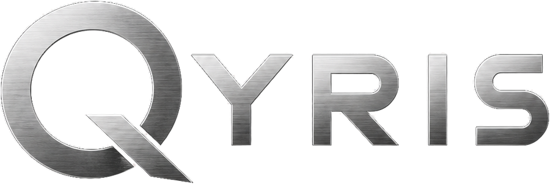

Préparer un exposé, un oral ou un entretien avec l'IA
Un oral, une présentation ou un entretien, ça se prépare. L'IA peut vous aider à structurer votre discours, anticiper les questions difficiles et répéter jusqu'à trouver les bons mots.

Un nouvel article chaque jour sur l'IA, Claude Code et la productivité.
Un oral, une présentation ou un entretien, ça se prépare. L'IA peut vous aider à structurer votre discours, anticiper les questions difficiles et répéter jusqu'à trouver les bons mots.